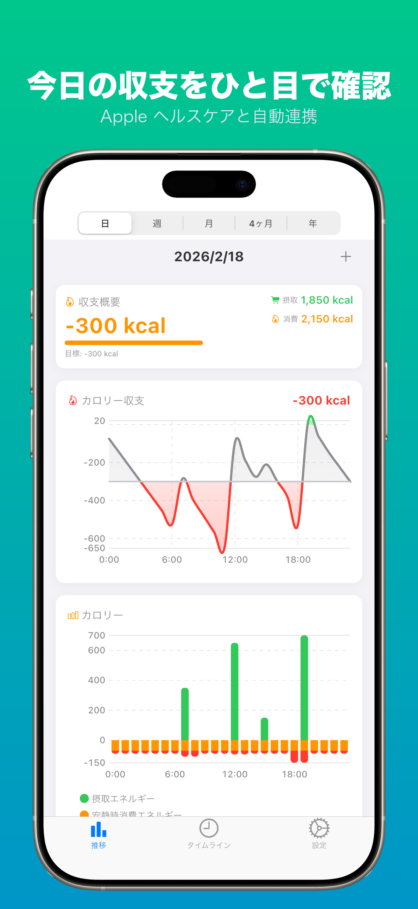
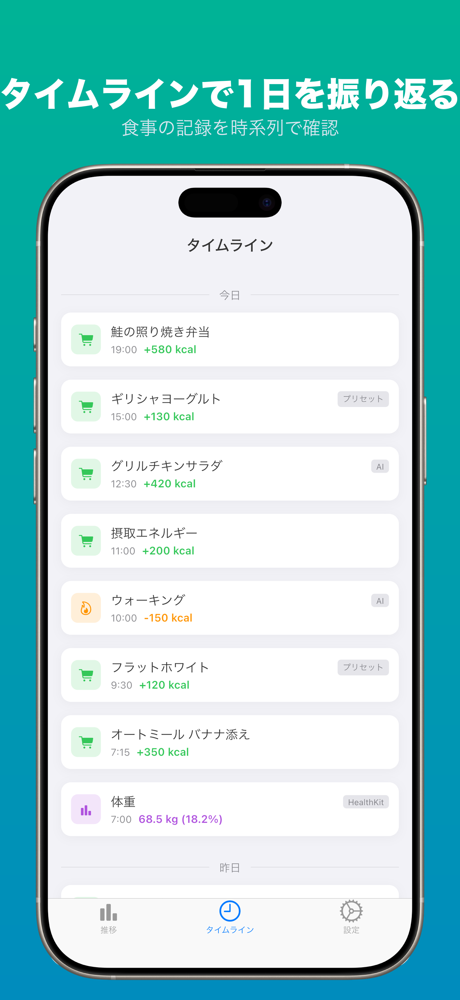
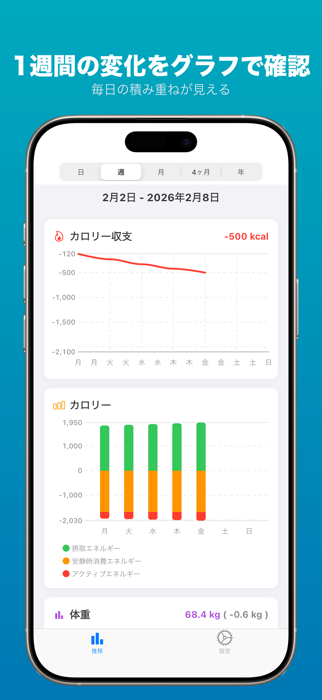
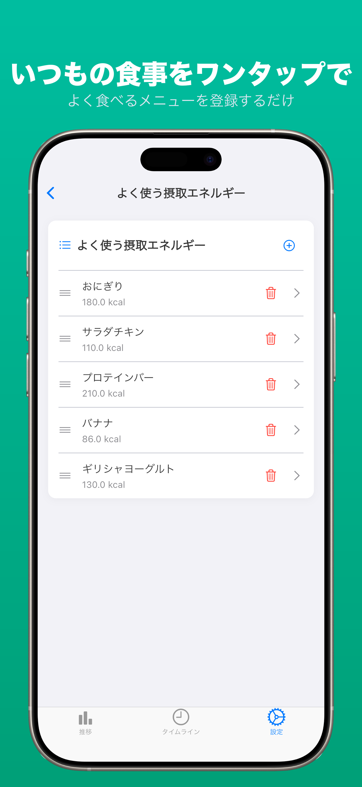
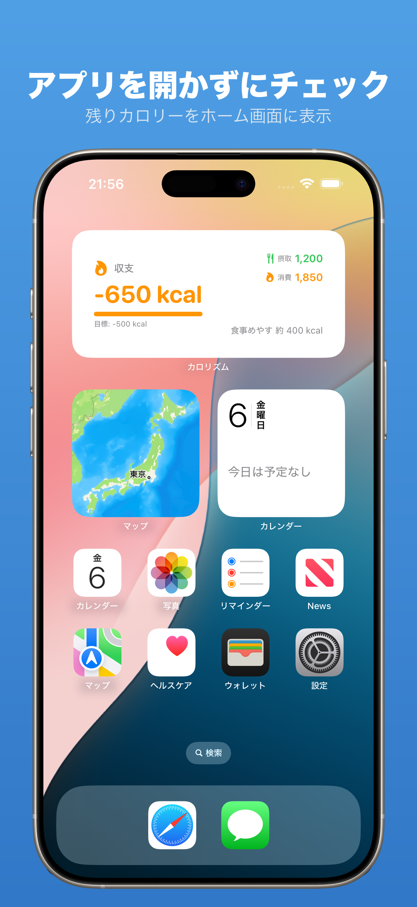
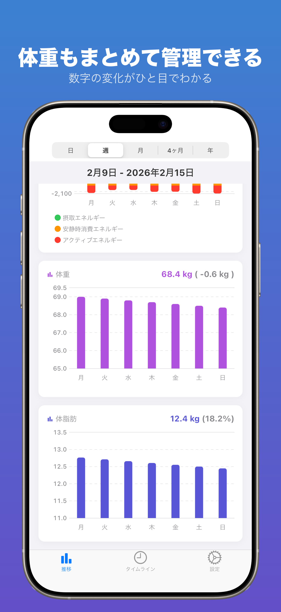
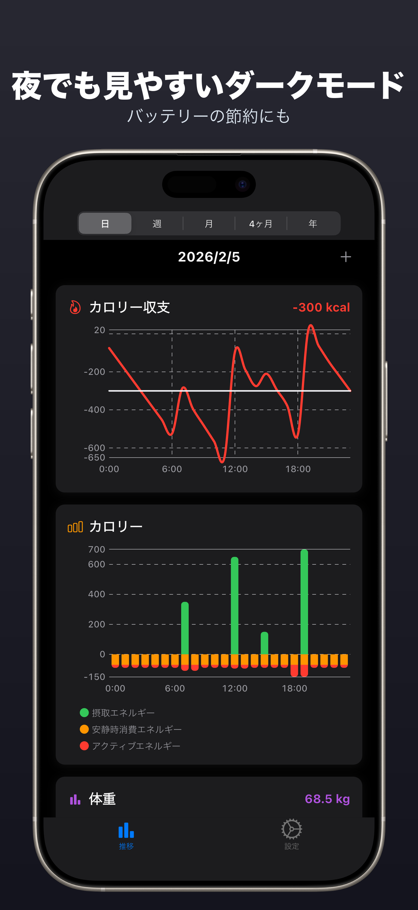
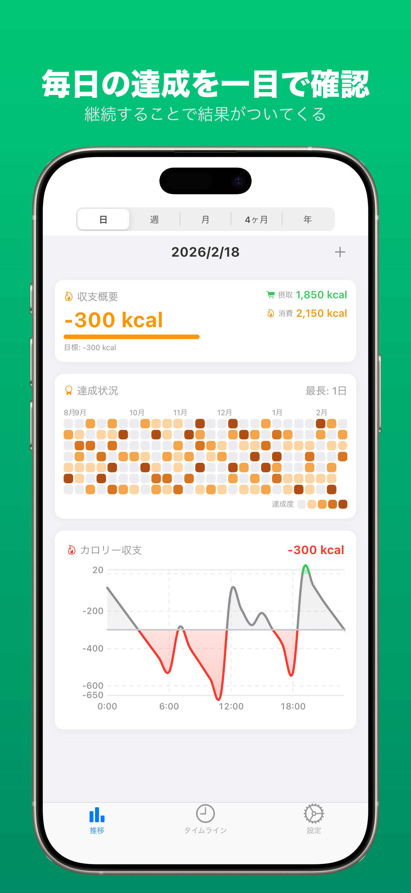
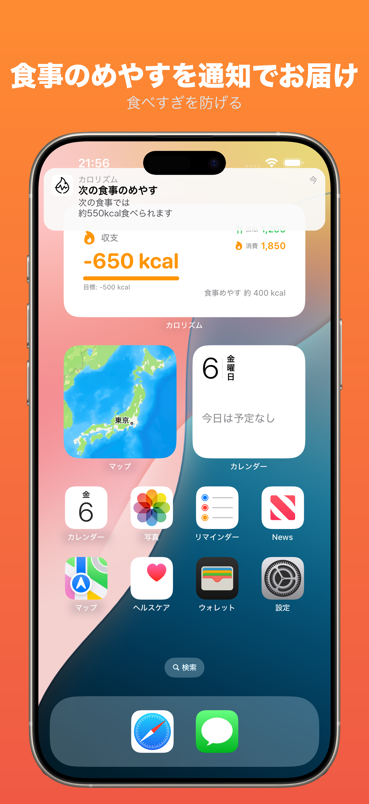

カロリー収支を、手間なく管理
カロリズムはApple ヘルスケアと自動連携し、カロリー収支を可視化。AIカロリー推定、週間トレンド、体重管理など — すべてひとつのアプリで。
App Storeからダウンロード 無料ダウンロード
カロリー管理に必要なすべてを
エネルギーバランスを一目で把握できる、シンプルで強力なツール。
ヘルスケア連携
活動データと体重を自動取得
AIカロリー推定
食品名を入力するだけでAIが推定
デイリー収支
今日の摂取と消費を一目で確認
週間トレンド
グラフで週間の収支推移を把握
タイムライン
食事・運動・体重の記録を時系列で確認
体重トラッキング
体重変化を週間グラフで確認
プリセット
よく食べるメニューをワンタップで記録
ウィジェット
ホーム画面でカロリー収支を確認
通知
カロリー収支を通知でお知らせ
デイリー収支
Apple ヘルスケアと自動連携し、カロリーの摂取量と消費量を並べて表示。活動量の手動入力は不要 — エネルギーバランスを一目で確認できます。
タイムライン
食事・運動・体重の記録をひとつの時系列フィードで確認。いつ何を記録したかをすぐに振り返れるので、日々の生活パターンの把握に役立ちます。

AIカロリー推定
食品名を入力するだけで、AIがカロリーを推定。運動の活動エネルギーもAIで推定できます。データベースを検索する手間なし — 素早く、スマートに記録できます。
週間トレンドと体重管理
カロリー収支のトレンドと体重変化を直感的なグラフで確認。パターンを発見し、モチベーションを維持して食事プランの改善に役立てましょう。

プリセット
よく食べるメニューをプリセットとして保存し、ワンタップで記録。毎日同じ食品を入力する手間が省けます — 素早く便利なカロリー記録。

ウィジェットと通知
ホーム画面にウィジェットを追加して、カロリー収支を一目で確認。プッシュ通知で毎日のカロリー収支サマリーを受け取れます。

スクリーンショット




カロリズムが選ばれる理由
| 一般的なカロリー管理アプリ | カロリズム | |
|---|---|---|
| 主な指標 | 目標に対する残りカロリー | 摂取と消費のカロリー収支 |
| 消費カロリーの扱い | 食べられる量の調整に使用 | 収支グラフの中心要素 |
| 週間の振り返り | 摂取カロリーの履歴 | 収支トレンド＋体重変化をグラフ表示 |
| カロリー入力 | データベースから食品を検索 | 食品名からAIが推定 |
| アカウント・データ | 登録必須・クラウドに保存 | 登録不要・デバイスにローカル保存 |
よくある質問
はい、カロリズムは無料でダウンロードしてご利用いただけます。アプリ内に広告が表示されます。将来のアップデートでオプションの有料機能が追加される可能性があります。
食品名を入力するだけで、大規模言語モデルを活用したAIがカロリーを推定します。保存前にいつでも値を調整できます。1日の利用回数に制限があります。
現在カロリズムはiPhoneのみ対応です。Apple Watchへの対応は将来のアップデートで予定しています。
はい。健康データや食事記録はすべてお使いのデバイス上にローカル保存され、外部サーバーに送信されることはありません。詳しくはプライバシーポリシーをご覧ください。